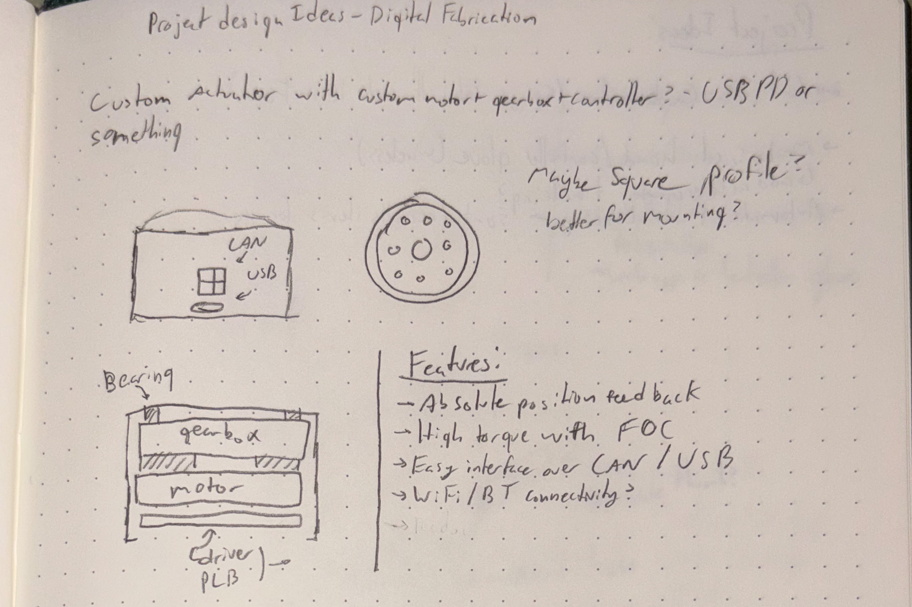
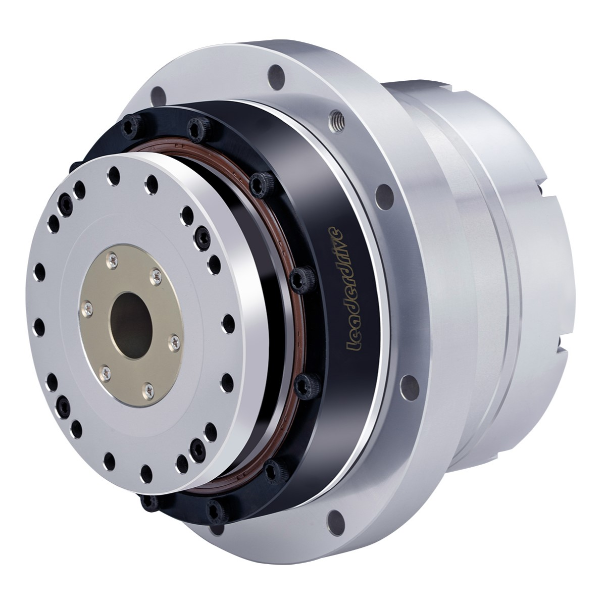
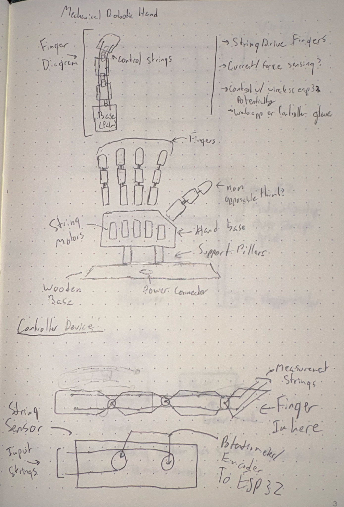
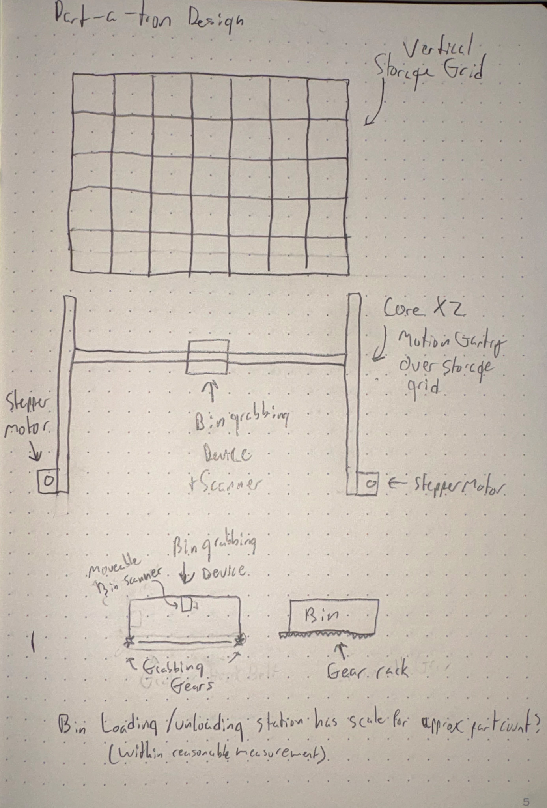

The Easy Actuator would be a smart, all-in-one actuator design that requires no complicated motor control code to set up. You just give it a position, and it goes there. This project was inspired by the actuators used in robotic arms and other heavy duty robotics, which incorporate many of the same methods of brushless motors and absolute position feedback. However, these actuators are expensive and much too heavy duty for small hobby robotics projects, and require an external enclosure for the circuitry to make them work. The Easy Actuator, in contrast, would be lighter duty, but it would me mostly 3d printed, lowering cost, and it would include a built-in driver circuit to simplify control.

Initial design sketches of the actuator, depicting its external and internal structures.

Production example of heavy-duty robotics actuator for industrial applications.
I was inspired to come up with the mechanical hand by the interactive art exhibition The Hand of Man, created by Christian Ristow, which is a giant robotic hand and arm controlled from a scissor lift controller station. I first saw this installation at a New York Maker Faire a number of years ago and since then mechanical hands and end effectors have been one of the things I'm quite interested in. This hand would be controlled by 5 motors/multi-turn servos connected to strings to curl and extend each digit, and if I can figure out a way to articulate the thumb that would be cool but probably infeasible with the space constraints. The hand will be controllable from a web interface of some sort, and hopefully live control can be implemented with a controller using much the same string mechanism but with rotation sensors (multi-turn potentiometers)on the string pulleys instead of motors.

Initial design sketches of the hand and controller mechanism.
Photo of The Hand of Man by Christian Ristow, from the Make Magazine.
This design was inspired by various organized sorting projects by creators like Zack Freedman and Engineezy and their sorting based projects, such as Zack Freedman's project Gridfinity. In fact, I hope to make this device gridfinity compatible in some way, such that it can be integrated with existing storage solutions. The project would make use of a coreXZ motion gantry carrying a box grabber that can pull the boxes in and out of the storage rack using gears and a gear rack integrated into the bin. The gantry would then bring the bin to a loading/unloading station that would allow for loading/unloading of small parts like screws or other fasteners, perhaps measuring the change in weight of the bin to determine the remaining stock of said parts, as long as they are heavy enough to measure.

Initial design sketches of the bin sorting robot and its parts.